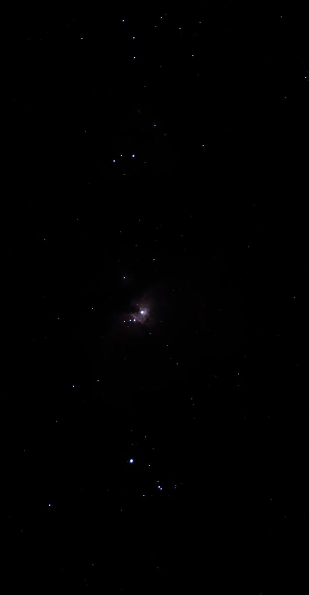

Étirement
Outil Stretch
Fait sortir le signal faible : étirement hyperbolique généralisé (GHS), arcsinh ou histogramme, avec la courbe tracée sur l'histogramme.
Comment s'en servir
- Ouvrir Tools et cliquer l'outil : il s'ajoute après l'étape choisie.
- Bouger ses réglages : l'image suit pendant le geste (Live preview).
- Apply garde le résultat. Before / after compare à tout moment.
En GHS, clic droit sur une région de l'image : l'étirement se centre sur son niveau ; garder le bouton enfoncé et tirer vers le haut pour étirer plus fort.
Réglages
- Histogram / GHS / Arcsinh
- Histogram : point noir, tons moyens et point blanc. GHS : étirement hyperbolique généralisé. Arcsinh : un étirement doux qui garde la couleur des étoiles.
- Auto
- Les réglages sont calculés d'après l'image ; tout changement à la main prend le relais.
- Stretch factor
- La force de l'étirement.
- Local intensity (b)
- GHS : la concentration du contraste autour du point de symétrie. Les valeurs négatives sont douces (−0,8 par défaut).
- Per channel / Luminance
- Per channel : couleurs de nébuleuse plus fortes, les étoiles brillantes blanchissent. Luminance : les couleurs sont gardées.
- Colour, Natural stars
- Arcsinh : la part de couleur gardée, et la façon dont les étoiles blanchissent vers leur cœur.
- Soft star cores
- Arcsinh : fond le bord net du disque blanc d'une étoile brillante dans son halo. Les petites étoiles et la nébuleuse ne changent pas : sur la pile HDR de M 42, à 50 %, 0,1 % des pixels sont modifiés.
- Linked / Unlinked
- Histogram : une courbe pour les trois couleurs, ou une par couleur.
Quand s'en servir
Le point de bascule de la séquence : avant lui l'image est linéaire, après lui c'est l'image que l'on voit. Les outils de l'image étirée viennent ensuite.
Image
Fait pour une image linéaire ; utilisable sur une image étirée.
Exemple


données linéairesétirée